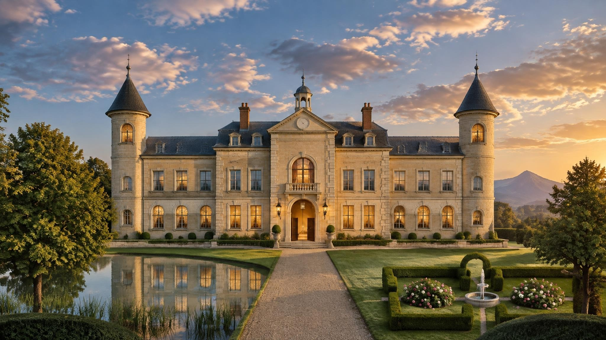

The house


The House · enter by the gate; the quarters are keyed
Rooms
The same rooms as in the painting, with why each sits where it does. Keys are asked for once per browser session.
1. Drive (private)Each room has a folder of its own for source material and pipelines. Nothing there is public.
2. Publish results onlyA pipeline pushes just its result files into the matching room here. The Market Board is the first.
3. Lobby (public)Every room is a self-contained sub-site under its own folder; all but the facade are behind a key.